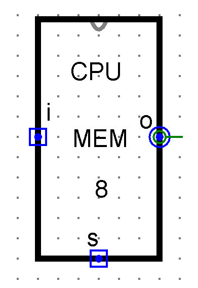
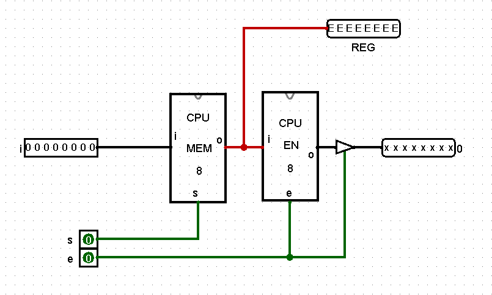
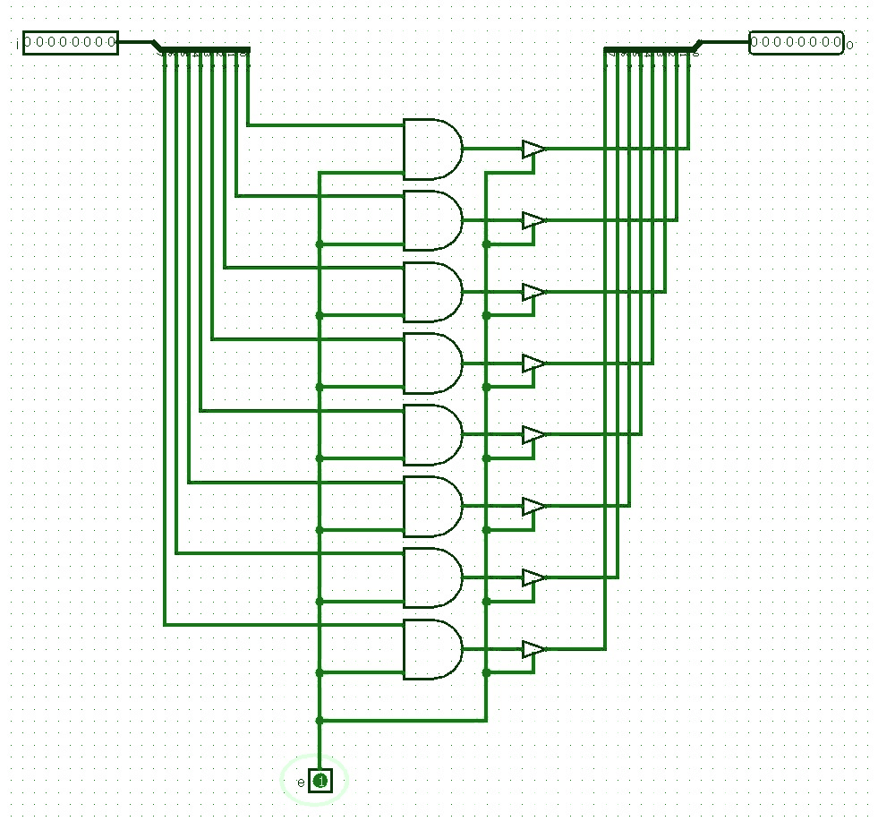
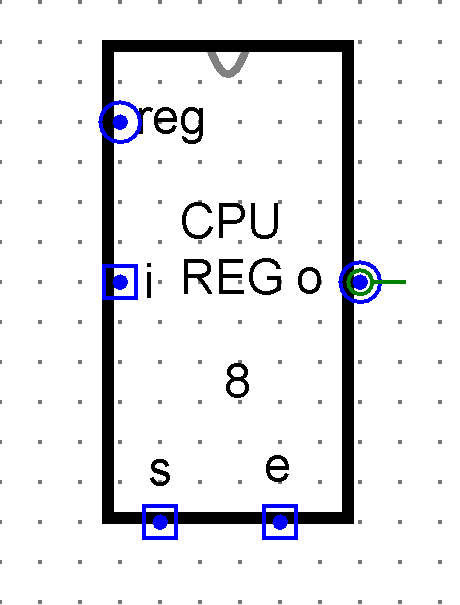

A Byte That Holds, and Knows When to Speak
Sections 5.1 – 5.4 | Estimated time: ~2.25 hours
5.1 From One Bit to Eight
Last week closed on a sentence, and it is worth repeating exactly:
Eight of these memory cells, wired in parallel with a shared Set line, become a register.
That is the whole step. Not a simplification of it — the whole thing. You are about to spend twenty minutes on what is arguably the most important component in your CPU, and the reason it takes twenty minutes is that you spent last week building the hard part.
What a byte needs that eight bits do not
Eight MEM_1BIT cells sitting near each other are eight bits. They become a byte when one decision writes all eight at the same instant.
That is what the shared line does. One s input, fanned out to all eight Set pins, so there is no arrangement of controls in which three cells have been updated and five have not. Either the byte was written or it was not.
There is no new gate on this page. No new idea. Eight instances of a component that already exists in your file, and one wire reaching all of them.
That is exactly what "circuits are components for the final project, not disposable exercises" was for. Week 4 built a component. Week 5 spends it. Every week from here does more of this and less gate-wiring, which is what building up an abstraction feels like from the inside.

s wire at the bottom branching to all eight cells — that one wire is what makes this a byte.The splitter, and why an 8-bit wire is not a different kind of wire
You met splitters in Lab 2 as a tidiness tool. This is their first structural use, and the idea behind them is worth stating plainly: an 8-bit wire and eight 1-bit wires are the same eight wires, drawn differently. A splitter is not a component that does anything; it is a notation for bundling and unbundling.
Which is why the input pin is a single 8-bit pin rather than eight separate ones. The byte enters as one object because that is what it is.

One thing this circuit cannot do, and it is the subject of the rest of the page: its output is always driven. Whatever is stored is on the output pin, continuously, with no way to say not now. That is fine while it is the only thing in the room.
5.2 Getting the Byte Back Out
There is an asymmetry between writing and reading that is easy to miss, and everything on the rest of this page comes out of it.
- Writing is addressed. A
sline runs to exactly one register and nowhere else. Raising it affects that register and nothing in the machine notices. - Reading is not. A value read out of a register has to go somewhere — and in this machine, everything goes to the same place.
So reading needs a control of its own. Week 4 named this pair already: storing and speaking are two different controls, and you have built the first one. This is the second.
Deriving the enable stage
We want a stage between the stored byte and the outside world that either passes the byte through or does not, under one control. Take each bit and AND it with a control line e:
e= 1 — the AND gate's output is whatever the bit is. The byte passes.e= 0 — every AND gate outputs 0. The output is00000000.
Eight AND gates, one shared control. Same shape as the memory circuit: splitter, eight identical things, one line reaching all of them, splitter.

Do not fix it yet. Section 5.3 is about what goes wrong, and the answer is more interesting than the problem.
Two controls, two names
Your register now has two 1-bit inputs and it is worth being pedantic about which is which, because conflating them is the predictable mistake:
| Pin | Does | Direction |
|---|---|---|
s — set | writes what is on the input into the memory | in |
e — enable | reads what is stored out of the memory | out |
Dave's own note from when this was first built: "we renamed what was 'enable' to 'set' — it allows us to 'Set' what is stored and then we can 'Enable' our output circuit to get what is stored." Two different jobs, two different names, and the rename happened precisely because one word doing both jobs was causing errors.
5.3 The Bus, and Knowing When to Let Go
A CPU has many registers, and they spend their whole lives handing values to each other. The obvious way to arrange that is a dedicated path from every register to every other register — which needs n × (n − 1) sets of eight wires and stops being buildable somewhere around three registers.
So machines do the other thing. One set of wires that everybody shares. It is called a bus.

s and an e. This is the whole picture, and the next several paragraphs are about one question it raises.Which raises the question. If both registers are permanently wired to the same lines, what does the wire carry?
The third state
Every wire in this course so far has carried a 0 or a 1. A controlled buffer has a third option, and it is not a third value: not driving at all. No voltage asserted, the wire left to whatever else is connected to it. Logisim draws it as x.
That is a strange thing the first time you meet it, so be precise about it: x is not a value the register is outputting. It is the absence of the register outputting anything.
Why "drive 0" is not good enough
Here is the argument, and it is worth following rather than accepting. Put two registers on one wire.
Suppose "silent" means driving 00000000. R1 wants to put 10101010 on the bus. R2 is silent — which is to say, R2 is driving eight zeros. Look at the top bit: R1 is asserting 1 and R2 is asserting 0, on the same wire, at the same time.
There is no rule of logic that resolves that. It is not an OR, it is not an AND, and nothing arbitrates. In Logisim it shows as an error. In real hardware it is a short circuit between two output stages, one pulling the wire high and one pulling it low, and the current goes somewhere. Neither register wins. Both are wrong, and one of them may not survive it.
Now suppose "silent" means not driving. R2 lets go. Exactly one device is asserting anything, and the wire carries what R1 put there. R1 finishes, lets go, and R2 can have a turn.
AND gates cannot be absent. An AND gate always drives its output; that is what a gate is.
So a bus needs something in the output stage that is not a logic gate — a device whose job is to be able to disconnect. That is the entire reason the controlled buffer exists, and the entire reason Logisim's Gates folder contains something that does not compute a logic function.
The same circuit, twice, with one component different
These are two screenshots of the same register, built by your instructor, a few minutes apart. Look at the output pin on the right of each one.

e = 0 the register is driving eight zeros onto the bus. It is asserting. It will fight.

e = 0 the register is not driving at all. It has let go, and someone else may speak.
One component different, and the difference is readable straight off the output pin without a word of explanation. The second one is the register this course builds.
xxxxxxxx is the correct answerWhen you build this and the output shows xs with e at 0, that is the circuit working. It is not an error, it is not a missing wire, and it does not need fixing.
Students delete the buffers over this every year. Do not be one of them.
Could you build one from gates?
Standards for this course say you build your components from primitives rather than dropping in finished ones, so it is fair to ask why this is an exception. The honest answer is more interesting than a circuit diagram would be:
Every one of those gates always drives its output. There is no combination of them that produces "not driving," because not-driving is not a logic value they can compute.
The third state is a physical property of an output stage, not a logic level: two transistors, one pulling the wire toward high and one pulling it toward low, and a control input that switches both of them off so the wire is connected to neither. On a real chip, that is what an output-enable pin does.
This is the second time this course has met the edge of what gates alone can do. The first was last week: no combinational arrangement of gates can remember, so memory needed feedback rather than more gates. Here: no arrangement of gates can be silent, so a bus needs a different kind of output stage rather than more gates.
Both are places where the abstraction runs out and the physics shows through. They are worth noticing as such — a lot of engineering is knowing where your building blocks stop.
Which is why the controlled buffer is permitted. It is a primitive, like a NAND gate, and it lives in the Gates folder for that reason. You may place it freely.
Nine buffers, and why
Here is the enable stage as you will actually build it: the eight AND gates from section 5.2, each one now feeding a controlled buffer, and every buffer's control tied to the same e.

ENABLE_8BIT as built: eight AND gates and eight controlled buffers, all on one e. Click to enlarge.And the assembled register adds one more — a ninth buffer, eight bits wide, on the way out, also controlled by e. You can see it in the right-hand screenshot above.
Now do the analysis, because it is worth doing before you are told the answer.
The AND stage. With e = 0 the buffers are off, so nothing downstream can see what the AND gates produced. With e = 1 the AND gates pass their inputs through unchanged. In neither case does the AND stage determine the output. It never does.
The ninth buffer. The eight inside the enable circuit have already floated every bit. A buffer after them, on the same control line, has nothing left to do.
By that reasoning, the whole output stage could be eight buffers and nothing else.
It cannot.
Not a wrong answer — an unreliable one. Your instructor built it both ways, and the ninth buffer is what makes it behave. That is a property of Logisim Classic 2.7.1, not of the design.
This is worth stopping on, because it is a real thing and it will happen to you again.
A simulator is a model of a circuit, and every model is approximate somewhere. Logisim works out what a shared wire carries by examining what every connected component is driving, and the details of how it does that — particularly with several buffers meeting at a splitter — are not physics. They are one program's implementation of physics. Most of the time you will never notice the difference. Here you would.
The rule this leaves you with is not a course rule, it is an engineering one: when your analysis and your tool disagree, do not assume either one is simply wrong. Find out which. Here the analysis is right about the electronics and the tool is right about what will actually run — and the design that ships has to satisfy both.
So: build all nine. And know why each part is there, which is more than "because the instructions said so."
What decides when each line goes up
You now have two controls per register and several registers on a bus. Something has to raise and drop those lines in a sensible order. Here is the order, for moving a byte from R1 to R2:
- R1
ehigh — R1's byte is now on the bus. - R2
shigh — R2 takes it. - R2
slow — R2 holds it. - R1
elow — R1 stops driving.
Four steps, and the order is not a matter of taste. Look at what the two signals do relative to each other:

s pulse sits strictly inside the e pulse.Why it has to be that way, in terms you already have: MEM_1BIT is transparent while its Set is high — last week, section 4.4. So whatever is on the bus during R2's s pulse is what R2 ends up holding. Nesting that pulse inside R1's e guarantees the bus is stable for the whole window and a moment either side.
Transparency is a genuine hazard. It is not fixed by a rule that says "be careful about when you raise s" — it is fixed by shaping the control signals so the bad case cannot arise.
That is exactly what last week did with the forbidden state: not a warning, a construction that makes it unreachable. Twice now, the engineering answer has been to design the problem out rather than to ask anyone to be careful. Watch for it happening again; it is most of what control design is.
5.4 Assembling REGISTER_8BIT
Memory circuit, enable circuit, one buffer, two control pins. That is the register.

The interface
These pin names are the interface, and later weeks depend on them being exactly these. Week 13 wires a dozen of these blocks together, and a register whose pins are named differently from everyone else's is a register that does not fit.
| Pin | Width | Direction | Position | What it does |
|---|---|---|---|---|
| i | 8 | in | left | the byte to store |
| s | 1 | in | bottom | write control — while high, the stored byte follows i |
| e | 1 | in | bottom | read control — while high, the register drives the bus |
| o | 8 | out | right | the bus port — driven only when e = 1 |
| reg | 8 | out | top left | the stored byte, always visible, regardless of e |
Two outputs, and why that is not redundant
o is polite. reg is honest.o is the bus port. It says nothing unless e says to, because it shares a wire with a dozen other things.
reg is the test point. It is always live, it reaches no bus, and nothing downstream in the CPU consumes it. It exists so you can see what a register is holding without making it speak.
That distinction is this whole page in two pins: holding a value and putting it where others can see it are different acts.
It is also the difference between a debuggable machine and an undebuggable one. In Weeks 13 and 14 you will be staring at a CPU that is doing almost the right thing and trying to find out where the value goes wrong. Without reg, the only way to look inside a register is to put it on the bus — which changes what the bus is carrying, which is the thing you were trying to observe.
Every register in your finished CPU has one. Build it now.
Circuit appearance — and one specific warning

s and e sit next to each other along the bottom.s and e on the block, and check them when you wire itA circuit-appearance block's pin positions do not have to match the internal layout — you can put them wherever you like. That is convenient and it is a real source of miswiring.
You are going to place this block a dozen times over the next eight weeks, and s and e are two identical-looking 1-bit pins side by side on the same edge. Get them the wrong way round and your register will read out when it should write and write when it should read — with no error message anywhere.
Where this component ends up
Not a preview — a list of things in your finished CPU that are this circuit:
- R0, R1, R2 and R3, the four working registers.
- The program counter, which holds the address of the instruction being fetched.
- The memory address register, which holds the address the CPU wants to read or write.
- The instruction register, which holds the instruction currently being executed.
And every populated byte of your RAM, in Week 8, is made of the MEM_1BIT cells inside it.
The three circuits on this page — MEM_8BIT, ENABLE_8BIT and REGISTER_8BIT — are Part A of Assignment 5, worth 50 of its 100 points. New tabs in the same .circ file you have been adding to since Week 2.
Lab 5 on Tuesday builds them with you. It is the first lab that does not finish in the room — expect to complete and test on your own afterwards.
Build-along video
A screen recording of this register being built, start to finish, will be posted here later this week.
Two things to know before you watch it. The circuit tabs are named CPU MEM 8, CPU EN 8 and CPU REG 8 in the recording; in your file they are MEM_8BIT, ENABLE_8BIT and REGISTER_8BIT. Same circuits, current names. And the enable stage is built in two passes — AND gates first, buffers added afterwards — so do not worry when the buffers are not there yet.
Video transcript
The video and its transcript will be posted later this week.
Where this goes next
You have a circuit that holds a byte. The next page is about the fact that the byte does not mean anything until something decides what it means — and about the agreement that decides it.
Then, on the page after, you will encode real instructions into real binary by hand. And somewhere in the middle, the two halves of this week meet: the thing MIPS calls $t0 is the circuit you just built.